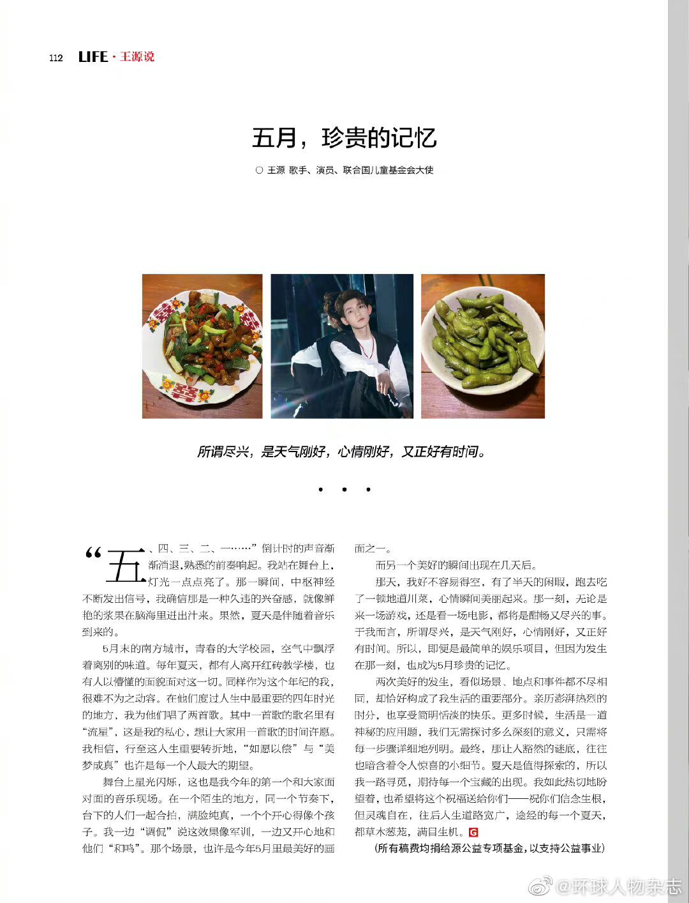
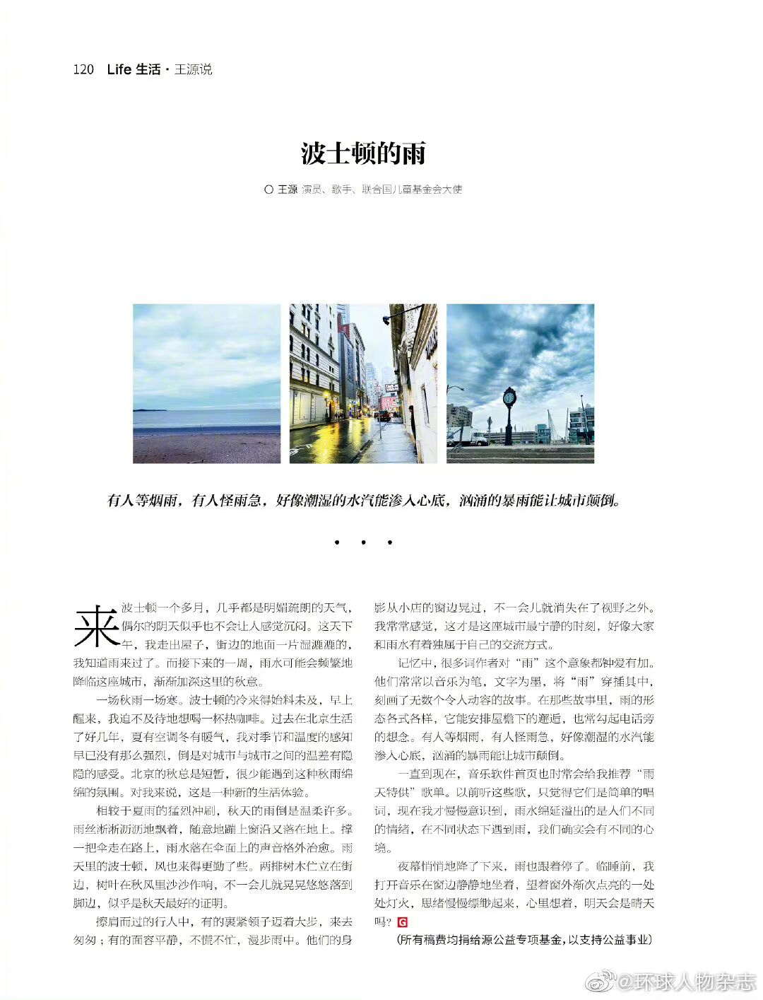
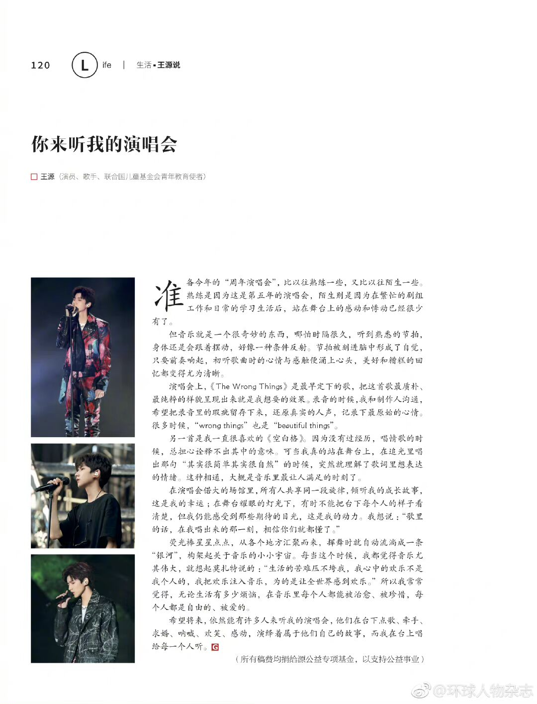
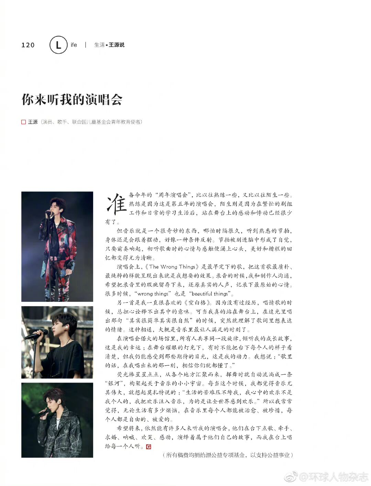

王源
语录
1、看似不起波澜的日复一日，终究会在某一天让人看到坚持的意义。
2、勇气这东西吧，其实不在于势均力故的时候不怂，而在于力量愚殊的时候,你还能一步不退。
3、为自己喜欢的事情坚搏，为坚持的事情努力，潘到自己的进步，其实是件很幸福的事。也正国为这些辛苦，才让人察觉白驹过隙，才知道自己没有浪费光阴。
4、没有光的，只是未知，不是陌路。
5、行动，就是最好的消化法。
6、天真灿烂，尘世游慢，请拿出鼓动风云的勇敢。
7、最深的夜，最适合去回望来时的路。
8、不负光阴不负自己，不负被爱，不负所爱。
9、如何在常态中保持棱角，在风光旖旎中保持清醒，从青春到垂暮，这是人们一生都要做的功课。
10、生活何尝不是如此，一直是在美景里如履薄冰。
11、原地孤芳自赏，不如自由盛放。
12、人生路上许多一时的决定，日后都可能蝴蝶振翅，不知何地何时卷起肆虐狂风。
13、天真和成熟从来不矛盾，赤诚的心，也可以包裹住成长的诚恳，勇气和决心。
14、成长就是一边失去一边获取。
15、满天繁星，有我想成为的那道光。
16、长大并不意味着一定要去探究每件事情的结果和真相，长大也必然伴随着焦虑与敏感，唯一的解决之道就是站起来，走出去，去做自己该做的、喜欢的、能做的事。行动，就是最好的消化法。
17、长大这件小事，随时随地都在发生。
18、烟火即将绽放的前一秒，没人知道它之后的样子，我不知道我会是怎样的烟火，但我知道我选择的是，我最想成为的那一束特立独行的，属于我的光。
19、成长中偶尔也会有迷茫的时候，但人生就是在不断的否定、不断的自我摧毁后重建起来的。每一次摧毁与重建都是一次新的成长，打破之后，才有新生。
20、成长是一个令人遗憾又惊喜的过程,我们会慢慢地知道城市的道路有规划设计.树的成长有自然规律，云是怎么形成的，但这些答案过分具体，让人失去了想象力。
21、待凛冬离去,，雪融草青,相信一定有新的相逢将温暖延续。
22、新生活正徐徐展开,以此轮皎洁的明月,共祝我们拥有长久的欢喜与美梦。
23、爱你所爱，求你所求，得你所得。
24、生而自由，爱而无畏。
25、在这岁末将至、忙碌时光的罅隙，看着眼前熙攘的人群，我突然对新的一年充满了期待。
26、我们都用最妥帖的一切来招待即将到来的崭新的一年。
27、人们往往在深夜潜入内心深海,又在天明前开始想念陆地灯火。
28、世间最可怕的禁锢,从不是物理禁锢,而是内心的彷徨与恐惧:害怕试错成本太高，害怕蝴蝶效应太强，最终选择就在原地。
29、那些走过的路,那些笨拙而缓慢的生长，会让生活变得独立而丰富;那些咬牙坚持和日日锤炼，那些身体与心里的疤痕，会成为我赖以战斗的力量。
30、哪怕我只有百分之三十的天赋，也会投入百分之七十的努力，做百分之百的自己。
31、热爱是一种永恒的可能。
32、虽有乌云遇皎月,但只要坚持，也会有守得云开见月明。
33、学着慢一点，学着忍耐和等待，学着一步一个脚印，这是通往梦想最坚实的路。
34、和时间的赛跑，可不能输啊。
35、一点希望一线曙光，我竟丝毫不敢放。
36、我一直会记得一句话，强大到无往不利。
37、人如果一直敷衍地生活,很容易觉得时间飞逝而自己一事无成，如果偶尔经历一些难熬的瞬间，就能稍微抓住些时光的痕迹。
38、旅行让人意识到世界的辽阔和自己的渺小。
39、天空如墨,也如烟火。顺着光亮在曲折中找到那条路,留下属于自己的痕迹。
40、比起手机里的相片,亲自感受的身体记忆会留存更久。我想,人类的双眸之所以存在，是为了定格每个盎然的春天吧。
41、冬天雪花的存在短暂而绚彩,雪中的生命脆弱亦坚强,雪的美与残酷，都像是我们走的路，会在天寒地冻里实现最遥远的梦。
42、不知名的小果子“啪:”一声落进车窗，一面是日光，一面是果香。
43、眼前的浓雾像波涛汹涌的大海，在一个又一个腾起的云浪中,青山时隐时现,它们从峰峦之间盛开，在远处翻滚，直奔我而来。仿佛伸一伸手便可触到柔软云端，随意一捧就能把这人间仙境揽个满怀。
44、流浪的月亮和繁密的星辰姗姗来迟,我突然想到:银河如果有声音，会是什么样的旋律?
45、繁星点点，星星散发的微光软绵绵地包裹着我。
46、月光怎么这么炽烈像太阳。
47、突然意识到,我们习惯了车的鸣笛,人的嘈杂，习惯了耳机里的曲调、乐器的节拍，对自然的声音却陌生起来,城市里的水泥森林像重金属摇滚，而此刻雨后的山间,碧空无云,反而让人感到隽永和自由。
48、福祸总是互相转换的,美好的东西不可能永远美好,当下的痛苦可能是你未来最心心念念的幸福——苦与乐,都不会是一成不变的。
49、这世上没有什么无尽平坦的路,只有认真走路的人。
50、每一天都是限定日，每一天都是人生中最年轻的时刻。
51、有人等烟雨,有人怪雨急，好像潮湿的水汽能渗入心底，汹涌的暴雨能让城市颠倒。
52、世间最可贵的自由，从不是毫无约束，而是经历无名之辈时的疲惫与挣扎，冲破禁锢恣意飞翔。
53、只要心中充满阳光，每一个日子都能过得滚烫。
54、每个人都有觉得幸福的一面，也有觉得孤独无助的瞬间，这就是生命的跌宕。
55、这些不需言明的默契，都是我走下去的勇气。
56、想念竟然可以跨越时间随海流飘远，还想补上那句最后的再见。
57、我不要沙滩小岛马车和城堡，我不要人山人海热情的尖叫,我不要五光十色灿烂辉煌的灯光在闪耀，我只想有一天你能为我骄傲。
58、没有一个人是完全独立的状态，能够有人去信任、去依赖，也能够被人去信任、去依赖，这便是最幸福的事情了。
59、我开始懂得，一些过去很好的朋友，并不是因为彼此改变而不联系了，也有可能就是某一次没有办法及时分享喜悦，对方失落时没适时给予安慰,或许都是很小的事，但一点点积累，时间长了，过去的感情也就淡了。
60、等待生活重启的那一刻，那时的我们，不仅拥有了独处的能力，也有了更多拥抱世界的勇气。
61、当生活被按下了暂停键，我们不如顺其自然，一边放空，一边充电。
62、独处的时间里，我们可以用最轻松的状态与自己对话，不必在意周遭的目光，我们只需聆听内心最真实的声音，享受一种最纯粹的自由。
63、实际上独处并不是一种逃离行为，它更像是一种回归，一种积极的情绪体验。
64、唱下去就对了，做过的梦，都会实现。
65、自由、不是放肆。
66、既然来到这地球，那就好好玩吧。
67、希望年少轻狂的自己，依旧步履不停。
68、满天繁星，有我想成为的那道光。
69、放弃是对自我的否定。
70、时间会展示出一切事情的真相。
王源说 2018至今
 
 

以上所有照片转载于微博：环球人物杂志
BGM：潜